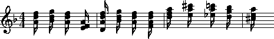

However, in this chapter we introduce the deceptively simple context command.
The effect of the
context
command is easier to illustrate than describe.
Consider a file (named input) that contains the numbers
1 through 6 on successive lines.
A null token is interposed between the numbers 2 and 3:
The command
**numbers 1 2 . 3 4 5 6 *-
context -n 3 input
will produce the following output:
In effect, context amalgamates data tokens from successive records and assembles them as multiple-stops on a single record. Notice that the number of data records in the output is the same as in the input: context has simply padded the trailing data records with null tokens. Also notice that individual data tokens can appear more than once. For example, the number 3 appears at the end of the second line, in the middle of the third line, and at the beginning of the fourth line. In the above example only the numbers 1 and 6 appear once. Finally, notice that null tokens are simply ignored: the null token in the fourth line of our input also appears in the fourth line of the output.
**numbers 1 2 3 2 3 4 . 3 4 5 4 5 6 . . *-
The -n 3 option tells context how many data tokens to amalgamate on each output line. With the specification -n 2, just two data tokens would be amalgamated on each output line.
How might context be useful? Suppose we wanted to determine how harmonic octave intervals are approached in Bach's two-part keyboard Inventions. What harmonic interval tends to precede an octave? We can use the hint command to generate the harmonic intervals for each successive sonority. To calculate all passing intervals, we will preprocess using ditto:
ditto inventions* | hint
Typical outputs might look like this:
M3M6 A4 =12 M6 m7 M3 A4 M6 A4 M6 P4 M6 M7 m9 m10 d12 m10 P11 M9 =13 m10 P4 M9 M10
Using
context
with the
-n 2
option will cause pairs of successive intervals to appear in the
data records.
Each data record will consist of a double-stop containing two
harmonic intervals.
We simply need to identify those data records that have P8
as the second token of the double-stop.
In short, we are interested in data records that end with P8.
The dollars-sign can be used in a regular expression to anchor the
pattern to the end of the line.
Hence:
ditto inventions* | hint | context -n 2 -o = | grep ' P8$'
The
-o =
option tells
context
to omit any data tokens matching the equals-sign --
that is, to omit barlines from the amalgamated multiple stops.
(The
-o
option accepts any regular expression as a parameter,
so omitted data can be defined in a much more refined manner
than simply specifying an equals-sign.)
The
grep
command grabs all of the lines ending with P8.
We can now create an inventory of harmonic interval pairs and order them
from least common to most common:
ditto inventions* | hint | context -n 2 -o = \
| grep ' P8$' | sort | uniq -c | sort -rn
In the case of Bach's fifteen two-part Inventions the results look as follows:
24 m10 P8
24 M10 P8
23 m7 P8
21 M6 P8
19 M9 P8
12 P5 P8
11 m6 P8
9 P12 P8
8 m13 P8
8 - P8
In other words, the octave is most commonly approached by contracting from minor and major tenths rather than expanding from a major sixth interval.
This same basic process can be used to address a variety of similar problems.
For example, suppose we wanted to determine the most common word following
"gloria" in Gregorian chant texts.
We first extract the
**text
spine, use
context
to create pairs of words, and search in the normal way:
extract -i '**text' chants* | context -n 2 \
| grep -i ' gloria$' | sort | uniq -c | sort -nr
A slight change to the regular expression for grep will allow us to determine what word typically follows after the word "gloria." In this case, we need to anchor the word "gloria" to the beginning of the line by using the caret (^).
extract -i '**text' chants* | context -n 2 \
| grep -i '^gloria ' | sort | uniq -c | sort -nr
Suppose we wanted to determine what scale degree most commonly
precedes the dominant pitch in a sample of Czech folksongs.
First we translate the folksongs to the
**deg
representation using
the
deg
command, and then process as above:
deg Czech* | context -n 2 -o = | grep '5 ' | sort \
| uniq -c | sort -nr
The V-I progression is the most common chord progression in Western
tonal music.
After the V-I progression, what is the most common chord progression
in Bach's chorale harmonizations?
We will assume that a Roman numeral
**harm
spine already exists.
First we extract the appropriate spine.
Then we create context records holding pairs of harmony data
(omitting barlines).
Then we eliminate global and local comments, interpretations,
and null data.
We then sort the data records, eliminate duplicates while counting,
and then sort by numerical count in reverse order.
extract -i '**harm' chorales* | context -n 2 -o = \
| rid -GLId | sort | uniq -c | sort -nr
Of course, there is no need to restrict ourselves to pairs of successive data tokens (i.e. -n 2) as we have done in the above example. Given a database of melodies, we can determine the most common sequence of five melodic intervals as follows:
mint melodies* | context -n 5 -o = | rid -GLId | sort \
| uniq -c | sort -nr
Example 19.1 shows an excerpt from a flute study by Anderson.
Although the work is monophonic,
the work's structure is based on an underlying chord progression
that is realized as a series of arpeggiation figures.
Example 19.1 Joachim Anderson, Opus 30, No. 24.
The harmonic structure can be made more explicit by amalgamating all of the notes in each arpeggio. There are several possible ways of doing this, but the slurs are particularly useful delineators. The -b option for context allows the user to specify a regular expression that marks the beginning of each collection of data tokens. Consider the following command:
context -b '(' Anderson
Whenever a data record contains an open parenthesis a new
amalgamation begins.
The appropriate output for measure 1 of Example 19.1 would be:
Notice how the barline for measure 2 has been included in the fourth group. (Groups continue until the next open parenthesis is encountered.) Once again we might eliminate barlines by using the -o option. However, sometimes the barlines prove useful in further processing.
**kern*clefG2 *k[b-] *d: *M4/4 =1- (16dd 16ff 16dd 16a) . . . (16dd 16gg 16dd 16b-) . . . (16dd 16ff 16dd 16a) . . . (16f 16a 16f 16e) =2 etc.
In the above passage by Anderson, the close of each slur provides a convenient marker for ending each chord. We can be more explicit in defining the grouping boundaries by also including the -e option for context. This option allows the user to specify a regular expression that marks the end of each collection of data tokens. A suitably revised command would be:
context -b '(' -e ')' Anderson
The resulting output would begin as follows:
We could pipe this output to the ms command in order to display the re-arranged passage. We place the output in a postscript file and use a display tool such as ghostview to display the output:
**kern*clefG2 *k[b-] *d: *M4/4 =1- (16dd 16ff 16dd 16a) . . . (16dd 16gg 16dd 16b-) . . . (16dd 16ff 16dd 16a) . . . (16f 16a 16f 16e) . . . =2 (16d 16ff 16dd 16a) etc.
context -b '(' -e ')' Anderson | ms > output.ps
Example 19.2 Arpeggio Amalgamation.

Notice that the resulting notation is "ungrammatical" because the meter signature disagrees with the total duration for each measure.
Having reformatted our input data using context, we can continue by translating the data to another representation. For example, we might use the deg command to reformulate each pitch group as scale degrees. This might allow us to search for particular harmonic patterns such as (say) an augmented sixth chord:
context -b '(' -e ')' Anderson | deg | grep '6-' | grep '4+' \
| grep '1'
Any regular expression can be used to identify the beginning and/or ending of an amalgamated group. For example, tokens might be grouped by barlines. Suppose the census command tells us that a monophonic work contains sixty-fourth notes. We might want to know whether the sixty-fourth notes all tend to happen in one or two measures, or whether they occur throughout the work. Just how many measures contain sixty-fourth notes?
context -b = inputfile | rid -GLId | grep -c '64'
Similarly, for
**kern
inputs, the following command counts the
number of measures that contain at least one trill:
context -b = inputfile | grep -c '^=.*[Tt]'
In **kern representations, the beginnings and endings of
beams are indicated by the letters `L' and `J' respectively.
We might group notes according to the beaming:
context -b L -e J inputfile
For example, the following command determines the location of any beams that cross over phrase boundaries:
context -b L -e J inputfile | grep -n '}.*{'
As in the case of the
-b
option, the
-e
option can be used by itself.
This option might prove useful, for example, when
collecting all chord functions preceding a cadence.
In Bach's chorale harmonizations, for example,
cadences are conveniently marked by a pause.
In the **harm representation, pauses are indicated by
the semicolon (;).
We can create phrase related harmonic sequences as follows:
context -o = -e ';' input
For example, we might count the number of harmonic functions in each phrase as follows:
context -o = -e ';' input | rid -GLId | awk '{print $NF}'
In Chapter 22 we will learn how to classify data into discrete categories. Using the recode command described in that chapter, we might group notes together according to changes of melodic direction. That is, each group of would consist of notes that are all ascending or all descending in pitch.
The stream-editors (sed and humsed) are especially
handy companions for context.
Suppose we wanted to identify by measure number those measures
that contain a
iii-V
progression.
Given a **harm input, we would first amalgamate all harmony
tokens for each measure.
context -b ^= inputfile | grep 'iii V' | sed 's/ .*//; s/=//'
Here we have used
grep
to isolate all those records that contain the character sequence iii V.
We have then used
sed
to eliminate all data following the first occurrence of a space.
This will leave only the barline token -- including the measure number.
When using grep it is common for the output to no longer conform to the Humdrum syntax. This is the reason why we used sed rather than humsed in the above example.) Remember that we can always use the yank -m command to create "grep-like" output that still conforms to the Humdrum syntax. If we wanted to maintain the Humdrum syntax, an equivalent to the above command would be:
context -b ^= inputfile | yank -m 'iii V' -r 0 \
| humsed 's/ .*//; s/=//'
The range option (-r) specifies that we grab the current record (0)
that matches the marker (iii V).
However, we are free to specify any other range.
Consider the following command variation:
context -b ^= inputfile | rid -d | yank -m 'iii V' -r 1 \
| grep 'ii IV' | humsed 's/ .*//; s/=//'
This command identifies all those measures containing a ii IV progression that have been preceded by a iii V progression in the previous measure.
Consider another example.
Suppose we wanted to determine whether the first pitch
in a phrase tends to be lower than the last pitch in a phrase.
As before, we might first amalgamate all notes in each phrase
onto individual data records.
We can use
humsed
to eliminate all notes other than the first and last.
The regular expression / .* / specifies any sequence
of characters preceded by a space and followed by a space.
Replacing matching strings with a single space will leave
output data records consisting of double-stops.
The first note of the double-stop will be the first note of
the phrase, and the second note of the double-stop will be
the last note of the same phrase:
context -b { -e } file | humsed 's/ .* / /'
We can continue processing by piping the output to the semits command. This will leave pairs of numbers representing the semitone distances from middle C. We might then isolate the data records by using rid.
. . . | semits | rid -GLId | awk '{print $2-$1}'
Finally, we have used the UNIX awk utility to carry out some simple numerical processing: in this case, substracting the first semitone value from the second one. Phrases that end on a pitch higher than the beginning pitch will have positive semitone outputs. Phrases that end on a pitch lower than the beginning pitch will have negative semitone outputs.
If we wanted to determine the semitone pitch distance between phrases, we need only to reverse the begin (-b) and end (-e) criteria. That is, we will amalgamate the last note of one phrase with the first note in the subsequent phrase. The full pipeline would be as follows:
context -b { -e } file | humsed 's/ .* / /' | semits \
| rid -GLId | awk '{print $2-$1}'
Frequently, we would like to answer context-related questions
that mix different types of data together.
For example, how many ascending major sixth intervals occur in phrases
that end on the dominant?
For this question, we need concurrent access to both melodic interval
data as well as scale degree information.
The solution to such questions typically involves linking different
types of data together using the
assemble
command.
Suppose the first phrase in our input begins as follows:
We need to pursue two independent lines of processing. First we creat a temporary file of scale degree information:
**kern*F: *M3/4 {8Bn 8c =1 4.a 8g 4f =2 4g 4d 4e =3 2c} *-
mint inputfile > temp.mnt
Then we amalgamate the pitch data according the phrasing information,
and translate the resulting data to the
**deg
representation:
context -b { -e } -o ^= inputfile | deg > temp.deg
Next we assemble the two temporary files together to form a single document.
assemble temp.mnt temp.deg
The first phrase output will appear as follows:
We need to search for the interval of an ascending major sixth (
**mint**deg *F: *F: *M3/4 *M3/4 [B] 4+ ^5 ^3 v2 v1 ^2 v6 ^7 v5 +m2 . =1 . +M6 . -M2 . -M2 . =2 . +M2 . -P4 . +M2 . =3 . -M3 . etc.
+M6)
associated with a phrase ending on the dominant (5$).
Before using the approprate
grep
command, we need to use
ditto
to propagate the scale degree data over the null data tokens in
the **deg spine;
ditto
will generate the following output:
Finally, we use grep to search for the composite data:
**mint**deg *F: *F: *M3/4 *M3/4 [B] 4+ ^5 ^3 v2 v1 ^2 v6 ^7 v5 +m2 4+ ^5 ^3 v2 v1 ^2 v6 ^7 v5 =1 4+ ^5 ^3 v2 v1 ^2 v6 ^7 v5 +M6 4+ ^5 ^3 v2 v1 ^2 v6 ^7 v5 -M2 4+ ^5 ^3 v2 v1 ^2 v6 ^7 v5 -M2 4+ ^5 ^3 v2 v1 ^2 v6 ^7 v5 =2 4+ ^5 ^3 v2 v1 ^2 v6 ^7 v5 +M2 4+ ^5 ^3 v2 v1 ^2 v6 ^7 v5 -P4 4+ ^5 ^3 v2 v1 ^2 v6 ^7 v5 +M2 4+ ^5 ^3 v2 v1 ^2 v6 ^7 v5 =3 4+ ^5 ^3 v2 v1 ^2 v6 ^7 v5 -M3 4+ ^5 ^3 v2 v1 ^2 v6 ^7 v5 etc.
assemble temp.mnt temp.deg | ditto | grep '^+M6.*5$'
In addition to linking together different types of data, sometimes we may also need to use a stream editor to modify the data in some way. Suppose we wanted to test a theory that the tonic pitch tends to be followed by a greater variety of melodic intervals than precedes it. That is, we might suspect that the tonic tends to be approached in stereotypic ways -- such as from the leading-tone (+m2), from the supertonic (-M2) or from the dominant (+P4); but what follows the tonic may be less restricted.
In effect, we need to generate two inventories: one for intervals that approach the tonic, and one for intervals that follow the tonic. We already know how to create an inventory of intervals approaching a particular scale-degree:
deg -a inputfile > temp1
mint inputfile > temp2
assemble temp1 temp2 | grep '^[v^]*1 ' | sort | uniq -c \| sort -rn > inventory.pre
For the intervals following the tonic, we need to use context -n 2. This will create pairs of intervals: the first interval will indicate the approach, and the second interval in each pair will indicate the continuation.
deg -a inputfile > temp1
mint inputfile | context -n 2 -o ^= > temp2
humsed 's/ .*//' temp2 > intervals.pre
humsed 's/.* //' temp2 > intervals.post
assemble temp1 intervals.pre | grep '^1 ' | sort | uniq -c \| sort -rn > inventory.pre
assemble temp1 intervals.post | grep '^1 ' | sort | uniq -c \
| sort -rn > inventory.post
In some tasks, it may be necessary to generate more than one context output. For example, suppose we wanted to identify possible "cross relations" between two voices. A cross relation occurs when an accidental occurs in one voice but not in another voice within a brief period of time. One approach is to extract each voice, translate to scale-degree and create brief contexts of (say) 2 or 3 notes. E.g.
extract -f 1 inputfile | deg | context -n 3 -o ^= > lower.tmp
extract -f 2 inputfile | deg | context -n 3 -o ^= > upper.tmp
We can then assemble the two contexts together:
assemble lower.tmp upper.tmp
Suppose our inputs consisted of an ascending C major scale played in the
lower voice concurrent with an E major scale in the upper voice.
Our output would look as follows:
In effect, each data record contains an agglomeration of three successive notes from both voices. Seaching for cross-relations would entail looking for scale degrees that are both modified and unmodified concurrently. For example, in the case of the subdominant pitch, we could search for such instances as follows:
**deg**deg *C: *C: 1 ^2 ^3 3 ^4+ ^5+ ^2 ^3 ^4 ^4+ ^5+ ^6 ^3 ^4 ^5 ^5+ ^6 ^7 ^4 ^5 ^6 ^6 ^7 ^1+ ^5 ^6 ^7 ^7 ^1+ ^2+ ^6 ^7 ^1 ^1+ ^2+ ^3 . . . . *- *-
assemble lower.tmp upper.tmp | rid -GLId \
| egrep '4[+-].* .*4([^+-])|$'
The regular expression given to egrep searches for a subdominant pitch in the lower voice that is either raised or lowered -- concurrent with a subdominant pitch in the upper voice that has not been modified. Notice the use of the tab character in the regular expressions to specify the precise voice being searched. We would also need to test for the reverse situation, where the modified pitch is in the upper voice:
assemble lower.tmp upper.tmp | rid -GLId \
| egrep '4[^+-].* .*4[+-]'
In a similar fashion, the user can mix together spines representing highly diverse types of contextual information to carry out searches for complex patterns or conditions. For example, a user might search for a specific piano fingering that coincides with particular interval-transitions and harmonic contexts.
The
-p
option for
context
allows the output data records to be "pushed" forward
by a specified number of lines.
Consider the normal operation of
context
as illustrated below.
The left-hand spine represents the input
and the right-hand spine represents the output where the option
-n 2
has been specified.
Now consider the effect of adding the -p option. In this case, the complete command is:
**kern**kern *C: *C: c c d d d e e e f f f g g g a a a b b b cc cc . *- *-
context -n 2 -p 1
The corresponding result is:
The data records have been pushed forward by one line: a null token now appears at the beginning of the output spine rather than at the end. Similarly, consider the effect of the following command:
**kern**kern *C: *C: c . d c d e d e f e f g f g a g a b a b cc b cc *- *-
context -n 4 -p 2
The corresponding result is:
The output is now padded with two preceding null tokens with a trailing null token at the end of the spine. In summary, the -p option pushes the context records by a specified number of lines. This allows us to move the contextual information around, and so provides more possibilities for searching. In the above case, the pitch `e' is aligned with contextual information that indicates the two pitches that precede `e' and the one pitch that follows it.
**kern**kern *C: *C: c . d . e c d e f f d e f g g e f g a a f g a b b g a b cc cc . *- *-
By way of example, suppose we are looking for a submediant pitch
that is approached by two melodic intervals of an ascending major
third followed by a descending major second.
First, we generate independent
**mint
and
**deg
outputs.
Next we process the **mint data using
context
to create pairs of successive intervals.
Without the
-p
option, the assembled output might look as follows:
With -p 1 the output becomes:
**deg**mint *C: *C: 3 [e] +m2 ^4 +m2 +M2 ^5 +M2 +M3 ^7 +M3 -M2 v6 -M2 +m3 ^1 +m3 -P4 v5 . *- *-
Now we can search directly for the situation of interest:
**deg**mint *C: *C: 3 . ^4 [e] +m2 ^5 +m2 +M2 ^7 +M2 +M3 v6 +M3 -M2 ^1 -M2 +m3 v5 +m3 -P4 *- *-
grep '6 +M3 -M2$'
The context command essentially transforms sequences of events into collections of pseudo-concurrent events. This pseudo-concurrent arrangement enables processing using line-oriented or record-oriented tools -- most notably grep, sed, humsed and awk. For example, it facilitates pattern searching using grep and also allows useful manipulations via tools such as humsed. The manner by which data tokens are collected together can be defined by a starting marker or an ending marker or both. Particular types of data can be excluded or omitted from the collections using the -o option, and the collections can be transported or pushed forward through the spine using the -p option.
We've seen a number of ways by which context can be used to establish a particular context for data. In Chapter 21 we will see how the patt command can be used to establish other kinds of contexts and how both of these commands can be used together.